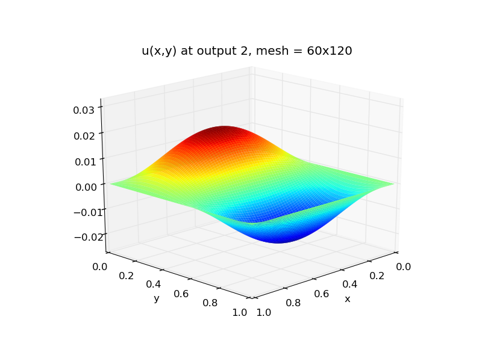
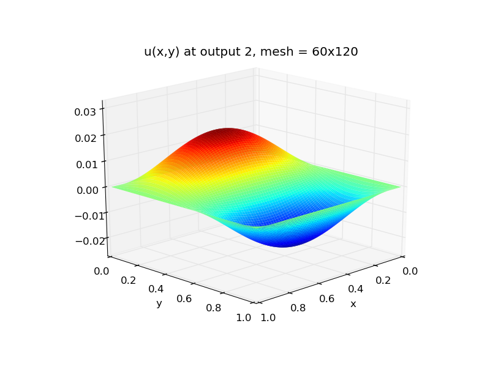
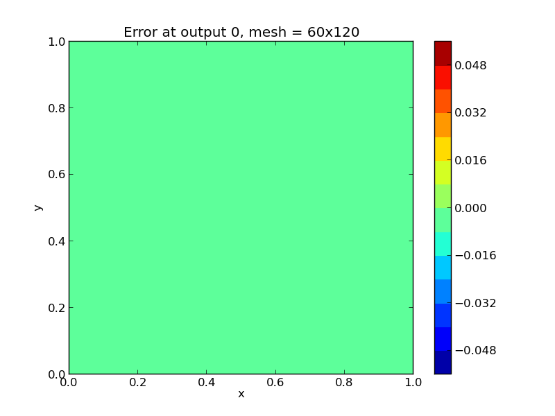
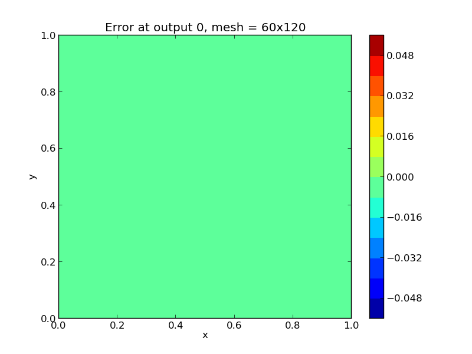

Parallel C++ example problems¶
ark_heat2D¶
ARKode provides one parallel C++ example problem, that extends our previous ark_heat1D test to now simulate a two-dimensional heat equation,
for \(t \in [0, 0.3]\), and \((x,y) \in [0, 1]^2\), with initial condition \(u(0,x,y) = 0\), stationary boundary conditions,
and a periodic heat source,
Under these conditions, the problem has an analytical solution of the form
Numerical method¶
The spatial derivatives are computed using second-order centered differences, with the data distributed over \(nx\times ny\) points on a uniform spatial grid.
The problem is set up to use spatial grid parameters \(nx=60\) and \(ny=120\), with heat conductivity parameters \(k_x=0.5\) and \(k_y=0.75\). The problem is run using scalar relative and absolute solver tolerances of \(rtol=10^{-5}\) and \(atol=10^{-10}\).
As with the 1D version, this program solves the problem with a DIRK method, that itself uses a Newton iteration and SUNLINSOL_PCG iterative linear solver through the ARKSPILS interface. However, unlike the previous example, here the PCG solver is preconditioned using a single Jacobi iteration, and uses ARKSPILS’ built-in finite-difference Jacobian-vector product routine. Additionally, this problem uses MPI and the NVECTOR_PARALLEL module for parallelization.
Solutions¶
Top row: 2D heat PDE solution snapshots, the left is at time \(t=0\),
center is at time \(t=0.03\), right is at time \(t=0.3\).
Bottom row, absolute error in these solutions. Note that the relative
error in these results is on the order \(10^{-4}\), corresponding
to the spatial accuracy of the relatively coarse finite-difference
mesh. All plots are created using the supplied Python script,
plot_heat2D.py.
 

{kind=link}
 

{kind=link}